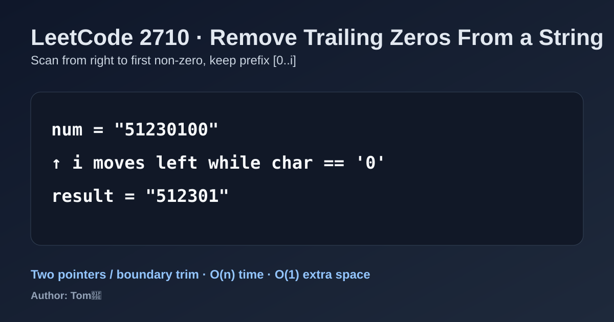

LeetCode 2710: Remove Trailing Zeros From a String (Right-Boundary Trim Scan)
LeetCode 2710StringTwo PointersTrimToday we solve LeetCode 2710 - Remove Trailing Zeros From a String.
Source: https://leetcode.com/problems/remove-trailing-zeros-from-a-string/

English
Problem Summary
Given a positive integer represented as a string num, remove all trailing '0' characters and return the resulting string.
Key Insight
We only care about a suffix of zeros. Scan from the right end until the first non-zero character, then keep prefix num[0..idx].
Algorithm
- Start pointer i = num.length - 1.
- While i >= 0 and num[i] == '0', move left.
- Return substring from index 0 to i + 1.
Complexity Analysis
Time: O(n) in the worst case (all zeros at end).
Space: O(1) extra (excluding returned string).
Reference Implementations (Java / Go / C++ / Python / JavaScript)
class Solution {
public String removeTrailingZeros(String num) {
int i = num.length() - 1;
while (i >= 0 && num.charAt(i) == '0') {
i--;
}
return num.substring(0, i + 1);
}
}func removeTrailingZeros(num string) string {
i := len(num) - 1
for i >= 0 && num[i] == '0' {
i--
}
return num[:i+1]
}class Solution {
public:
string removeTrailingZeros(string num) {
int i = static_cast<int>(num.size()) - 1;
while (i >= 0 && num[i] == '0') {
--i;
}
return num.substr(0, i + 1);
}
};class Solution:
def removeTrailingZeros(self, num: str) -> str:
i = len(num) - 1
while i >= 0 and num[i] == '0':
i -= 1
return num[:i + 1]var removeTrailingZeros = function(num) {
let i = num.length - 1;
while (i >= 0 && num[i] === '0') {
i--;
}
return num.slice(0, i + 1);
};中文
题目概述
给你一个表示正整数的字符串 num，删除末尾所有的 '0'，返回删除后的字符串。
核心思路
只需要处理尾部连续的 0。用指针从右向左扫描，找到第一个非 0 字符后，保留其左侧前缀即可。
算法步骤
- 令指针 i = num.length - 1。
- 当 i >= 0 且 num[i] == '0' 时持续左移。
- 返回子串 num[0..i]（代码里通常是 substring(0, i + 1)）。
复杂度分析
时间复杂度：O(n)（最坏情况下尾部 0 很长）。
空间复杂度：O(1) 额外空间（不计返回字符串）。
多语言参考实现（Java / Go / C++ / Python / JavaScript）
class Solution {
public String removeTrailingZeros(String num) {
int i = num.length() - 1;
while (i >= 0 && num.charAt(i) == '0') {
i--;
}
return num.substring(0, i + 1);
}
}func removeTrailingZeros(num string) string {
i := len(num) - 1
for i >= 0 && num[i] == '0' {
i--
}
return num[:i+1]
}class Solution {
public:
string removeTrailingZeros(string num) {
int i = static_cast<int>(num.size()) - 1;
while (i >= 0 && num[i] == '0') {
--i;
}
return num.substr(0, i + 1);
}
};class Solution:
def removeTrailingZeros(self, num: str) -> str:
i = len(num) - 1
while i >= 0 and num[i] == '0':
i -= 1
return num[:i + 1]var removeTrailingZeros = function(num) {
let i = num.length - 1;
while (i >= 0 && num[i] === '0') {
i--;
}
return num.slice(0, i + 1);
};
Comments